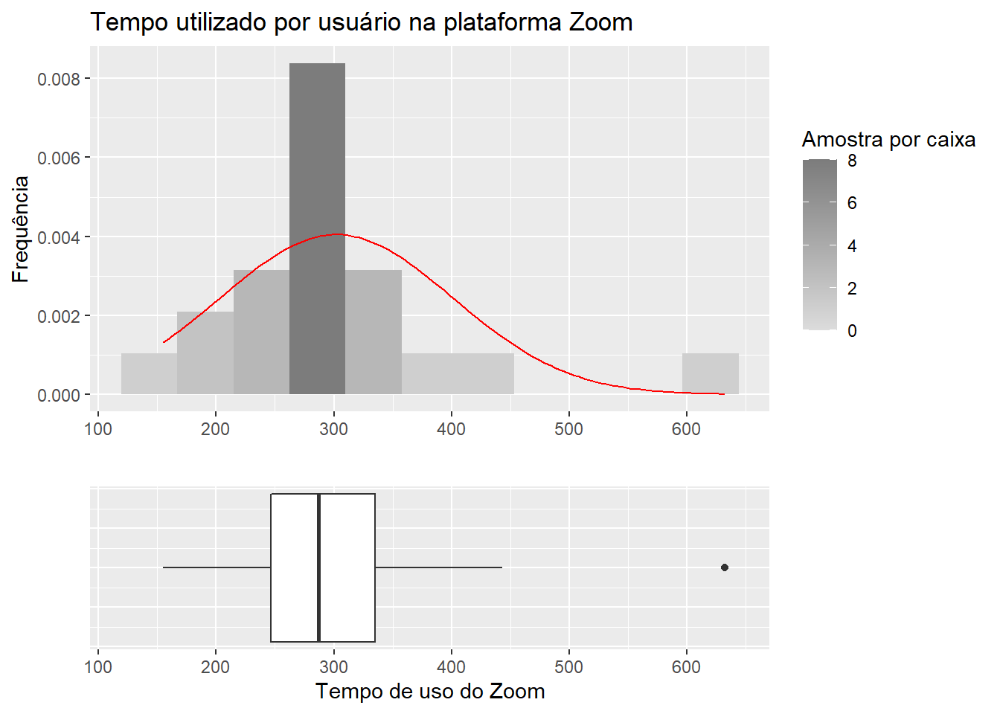
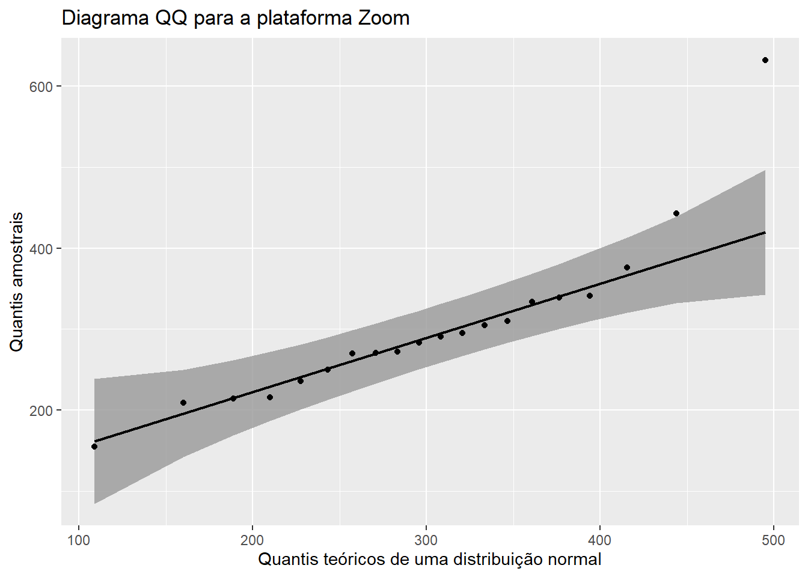

2 Análise de normalidade para as amostras que utilizaram a plataforma Zoom
A análise de normalidade é importante para permitir ao pesquisador decidir que tipo de testes estatísticos são pertinentes nos dados gerados pelo objeto de estudo. Com essa análise pode-se concluir ou não se a mostra foi retirada de uma população que segue uma distribuição normal.
A seguir são realizados os testes de normalidade para as amostras do arquivo meet-file.csv que utilizaram a plataforma Zoom.
A análise da normalidade pode ser feita por métodos visuais, cálculo de parâmetros e/ou testes estatísticos.
Serão aplicados os 3 métodos isoladamente para a conclusão sobre a normalidade da amostra.
2.1 Análise dos gráficos

Foi plotado um diagrama de caixas, um histograma com 11 caixas (bins) e uma curva gaussiana com a média e desvio padrão iguais aos da amostra de tempo utilizado na ferramenta Zoom, para utilizar como referência visual.
O gráfico do histograma mostra que a amostra seguiria uma uma distribuição aparentemente normal se o valor extremo à direita fosse excluído, pois: observa-se que a média da gaussiana e a barra com maior frequência e número de observações aparentementam estar muito próximas, e o número de observações ao redor da média e sua frequência são similares.
O valor extremo à direita faz com que haja uma assimetria positiva na amostra.
Uma das ferramentas gráficas utilizadas para avaliar a normalidade é o gráfico de quantil-quantil, onde são representados os quantis de cada observação da amostra e comparado com uma linha que representa os quantis de uma distribuição normal.

Observa-se que os pontos são plotados ao longo da reta que representam os quantis de uma distribuição normal, à exceção do valor extremo visualizado no gráfico anterior.
Portanto, baseado na visualização dos gráficos pode-se inferir que a amostra foi retirada de uma população que segue uma distribuição normal.
2.2 Cálculo da curtose e assimetria
O cálculo da curtose e assimetria de uma amostra se dá utilizando o quarto e terceiro momentos centrais, respectivamente, ajustados para dados amostrais.
Os valores esperados de curtose e assimetria para uma curva normal são 0.0 e 0.0 respectivamente. No código abaixo são geradas 1.000.000 de amostras aleatórias de uma distribuição normal e calculados seus parâmetros de assimetria e curtose:
library(e1071)
distNormal<- rnorm(1000000)
curtoseNormal <- kurtosis(distNormal)
assimetriaNormal <- skewness(distNormal)
cat(" Curtose de uma distribuição normal: ",
curtoseNormal,"\n","Assimetria uma distribuição normal: ",
assimetriaNormal)## Curtose de uma distribuição normal: -0.002317177
## Assimetria uma distribuição normal: -0.001900704Abaixo são calculados os mesmos parâmetros para a amostra Zoom:
curtoseZoom <- kurtosis(Zoom$Tempo)
assimetriaZoom <- skewness(Zoom$Tempo)
cat(" Curtose para as amostras que utilizaram a plataforma Zoom: ",
curtoseZoom,"\n","Assimetria para as amostras que utilizaram a plataforma Zoom: ",
assimetriaZoom)## Curtose para as amostras que utilizaram a plataforma Zoom: 3.208934
## Assimetria para as amostras que utilizaram a plataforma Zoom: 1.617429Percebe-se que os valores estão desviados do valor esperado para uma curva normal. Quanto à curtose pode-se classificar a amostra como leptocúrtica, ou seja, mais alongada que uma distribuição normal
A partir da assimetria calculada pode-se afirmar que a distribuição possui uma assimetria positiva, espera-se que a distribuição possua uma cauda mais longa à direita.
Portanto, a partir dos parâmetros calculados, conclui-se que a amostra não foi retirada de uma população que siga uma distribuição normal, pois seus parâmetros muitos se distanciam dos parâmetros para uma curva normal (0.0 e 0.0 para ambos).
2.3 Testes estatísticos
Chegou-se a conclusões distintas quanto à normalidade utilizando o método gráfico e o cálculo da assimetria e curtose.
É necessário portanto aplicar testes estatísticos de normalidade para a obtenção de resultados mais conclusivos.
2.3.1 Teste de Shapiro-Wilk:
O teste de Shapiro-Wilk apresenta a estatística W e o valor P para representar a significância estatística do teste. A hipótese nula é:
H0: A amostra foi retirada de uma população que segue uma distribuição normal.
A estatística W do teste, varia de entre 0 e 1, quanto mais alto for W mais a amostra se aproxima de uma distribuição normal.
O teste também apresenta o valor de significância estatística valor p para a amostra em questão.
Se o valor p para uma dada amostra for menor que um nível de significância designado pode-se rejeitar a hipótese nula e afirmar que a amostra não segue uma distribuição normal. Valores comuns para comparação de testes de hipóteses são: 0.1, 0.05, 0.01, a depender do que se está estudando e o nível de rigor requerido.
Abaixo a amostra Zoom é testada para normalidade seguindo o método de Shapiro-Wilk:
##
## Shapiro-Wilk normality test
##
## data: Zoom$Tempo
## W = 0.84372, p-value = 0.004191A partir do teste aplicado nas amostras que utilizaram Zoom pode-se afirmar que:
A um nível de significância de 0.1, 0.05 ou 0.01 a hipótese nula pode ser rejeitada chegando-se a conclusão que a amostra não vem de uma população que segue uma distribuição normal.
O resultado do teste confirma o que foi visto através do desvio acentuado da assimetria e curtose da amostra e contraria a análise gráfica realizada.
O teste é aplicado novamente removendo o valor extremo:
##
## Shapiro-Wilk normality test
##
## data: Zoom$Tempo[1:19]
## W = 0.98052, p-value = 0.9482O novo teste aplicado sem o valor extremo possui um valor p maior do que o maior valor normalmente utilizado de 0.1, portanto a distribuição segue uma distribuição normal se o valor extremo for excluído.
2.3.2 Teste de Kolmogorov-Smirnov
O teste de Kolmogorov pode ser utilizado para comparar duas amostras ou para comparar uma amostra com uma distribuição padrão.
O teste de Kolmogorov apresenta a estatíca D: Máxima diferença absoluta entre duas funções de distribuições cumulativas e possui um valor P para representar a significância estatística do teste. O teste de Kolmogorov possui as seguintes hipóteses nulas:
Comparação entre duas amostras:
H0: As duas amostras foram retiradas de uma população com a mesma distribuição.
Comparação entre uma amostra e uma distribuição de referência:
H0: A amostra foi retirada de uma população que segue a distribuição de referência.
Aplica-se então o teste para comparar a amostra Zoom a uma distribuição normal de média e desvio padrão iguais aos da amostra:
##
## One-sample Kolmogorov-Smirnov test
##
## data: Zoom$Tempo
## D = 0.20017, p-value = 0.3517
## alternative hypothesis: two-sidedA partir das informações contidas no teste:
A um nível de significância de 0.1 a hipótese nula não pode ser rejeitada chegando-se a conclusão que a amostra segue uma distribuição normal.
A visualização da distribuição cumulativa comparada com a distribuição cumulativa da curva normal é mostrada em seguida, onde os dois pontos conectados entre as curvas demonstram a estatística D do teste de Komogorov.
dist.Normal.Zoom<- rnorm(10000, mean(Zoom$Tempo), sd(Zoom$Tempo))
gera_ksplot(Zoom, dist.Normal.Zoom) Teste de lognormalidade para a amostra Zoom:
Teste de lognormalidade para a amostra Zoom:
library(MASS)
#
fitlogZoom <- fitdistr(Zoom$Tempo, "lognormal")$estimate
meanlogZoom <- fitlogZoom[1]
sdlogZoom <- fitlogZoom[2]
testeKSlogZoom <- ks.test(Zoom$Tempo, "plnorm", meanlogZoom,sdlogZoom)
testeKSlogZoom##
## One-sample Kolmogorov-Smirnov test
##
## data: Zoom$Tempo
## D = 0.13421, p-value = 0.8181
## alternative hypothesis: two-sidedA partir das informações contidas no teste:
A um nível de significância de 0.1 a hipótese nula não pode ser rejeitada chegando-se a conclusão que a amostra segue uma distribuição lognormal.
O resultado positivo tanto para normalidade quanto para normalidade pode ser devido ao baixo número de observações na amostra. Entretanto podemos observar que o valor-p para a lognormalidade é maior do que para normalidade.